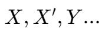
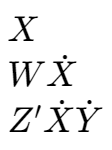
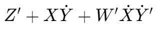
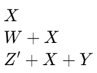
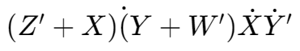
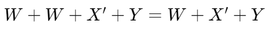
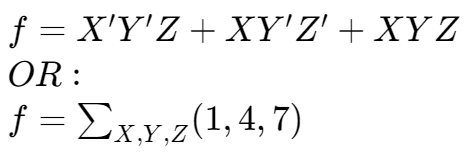
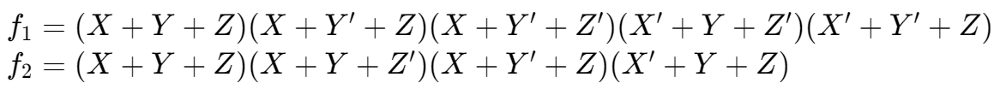

Terms
对于一些量：
Product Term
single literal, or product of two or more literals:

Sum-of-product expression

Sum Term
single literal, or sum of two or more literals:

Product-of-sum expression

Normal term
Product or sum term in which no variable appears more than once.
Non-normal term VS. normal term: 
Minterm
| Row | X | Y | Z | F | Minterm | m* |
|---|---|---|---|---|---|---|
| 0 | 0 | 0 | 0 | F(0,0,0) | X′·Y′·Z′ | m0 |
| 1 | 0 | 0 | 1 | F(0,0,1) | X′·Y′·Z | m1 |
| 2 | 0 | 1 | 0 | F(0,1,0) | X′·Y·Z′ | m2 |
| 3 | 0 | 1 | 1 | F(0,1,1) | X′·Y·Z | m3 |
| 4 | 1 | 0 | 0 | F(1,0,0) | X·Y′·Z′ | m4 |
| 5 | 1 | 0 | 1 | F(1,0,1) | X·Y′·Z | m5 |
| 6 | 1 | 1 | 0 | F(1,1,0) | X·Y·Z′ | m6 |
| 7 | 1 | 1 | 1 | F(1,1,1) | X·Y·Z | m7 |
在 minterm 的对照表中，变量 X, Y, Z 的值都为 1；对应地，它们的补 X′, Y′, Z′ 的值都为 0。
而 minterm 的项，即 mi，对应着第 i 行的变量组合，同时 i 也是 X, Y, Z 组成的二进制数的十进制表达。
Canonical Sum
将真值表中输出为真的所有行相加
对于表格：
| X | Y | Z | f |
|---|---|---|---|
| 0 | 0 | 0 | 0 |
| 0 | 0 | 1 | 1 |
| 0 | 1 | 0 | 0 |
| 0 | 1 | 1 | 0 |
| 1 | 0 | 0 | 1 |
| 1 | 0 | 1 | 0 |
| 1 | 1 | 0 | 0 |
| 1 | 1 | 1 | 1 |
取其中 f 值为 1 的所有行的 minterm 相加：

用例
Maxterm
| Row | X | Y | Z | F(X,Y,Z) | Maxterm | M* |
|---|---|---|---|---|---|---|
| 0 | 0 | 0 | 0 | F(0,0,0) | X+Y+Z | M0 |
| 1 | 0 | 0 | 1 | F(0,0,1) | X+Y+Z′ | M1 |
| 2 | 0 | 1 | 0 | F(0,1,0) | X+Y′+Z | M2 |
| 3 | 0 | 1 | 1 | F(0,1,1) | X+Y′+Z′ | M3 |
| 4 | 1 | 0 | 0 | F(1,0,0) | X′+Y+Z | M4 |
| 5 | 1 | 0 | 1 | F(1,0,1) | X′+Y+Z′ | M5 |
| 6 | 1 | 1 | 0 | F(1,1,0) | X′+Y′+Z | M6 |
| 7 | 1 | 1 | 1 | F(1,1,1) | X′+Y′+Z′ | M7 |
类似于 minterm，maxterm 的对照表中，变量 X, Y, Z 的值即为 0，它们的补 X′, Y′, Z′ 的值都为 1。
Canonical Product
将真值表中输出为假的所有行相乘
对于表格：
| X | Y | Z | f1 | f2 |
|---|---|---|---|---|
| 0 | 0 | 0 | 0 | 0 |
| 0 | 0 | 1 | 1 | 0 |
| 0 | 1 | 0 | 0 | 0 |
| 0 | 1 | 1 | 0 | 1 |
| 1 | 0 | 0 | 1 | 0 |
| 1 | 0 | 1 | 0 | 1 |
| 1 | 1 | 0 | 0 | 1 |
| 1 | 1 | 1 | 1 | 1 |
